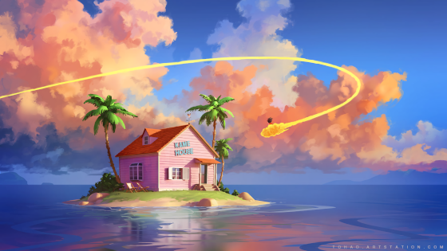
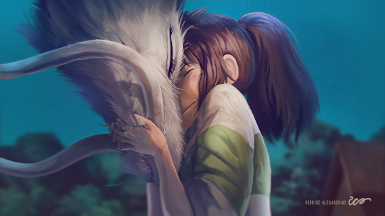
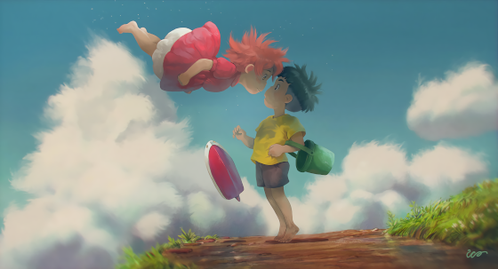
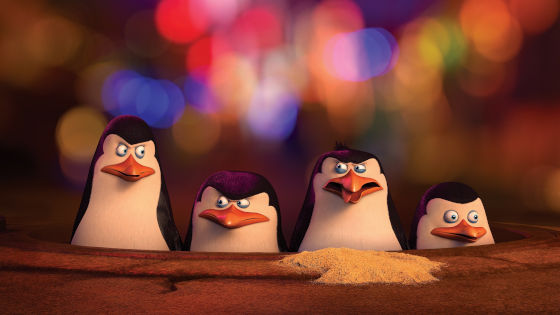

Esse papel de Parede é o que eu uso atualmente no meu computador, e adoro usar ele devido a qualidade das suas cores e a beleza da arte, trazendo uma certa profundidade para sua tela e tornando-a muito mais iluminada e aconchegante.

Esse papel de parede também está em uso no meu computador pessoal, na tela de bloqueio para ser mais preciso, adoro o sentimento passado nele, me lembra muito a sensação de quando assisti o filme, na qual eu recomendo, mais isso é assunto pra outro tópico.

Sem dúvidas tenho um carinho emorme por esse papel de parede, um remake da icônica cena final do filme ponyo: um amizade que veio do mar, e que remake hein, a imagem é linda, e cheia de cores contrastantes, o que torna a cena ainda mais impactante e dramática.

Como não amar essas fíguras? Os piguins de madagascar são sem dúvidas um ótimo alívio cômico pras nossas vidas corridas, então por que não colocá-los na tela do nosso computador? adoro ficar olhando esses desatrosos e bricando com os ícones da área de trabalho.